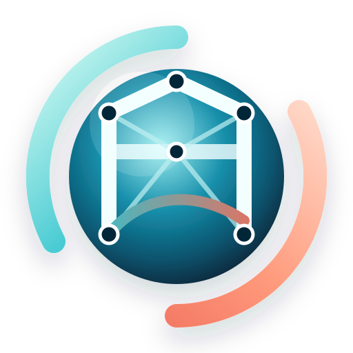

Portico + Nodex
Pre/post FEM + motor avanzado
Modelación estructural 3D, análisis, visualización de resultados y conexión con Nodex como motor FEM C++/WASM. Portico es la interfaz; Nodex es el núcleo numérico para análisis avanzados.
FrameShellModalNonlinearWASM
Abrir portico.conmuta.cl →